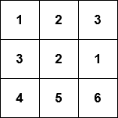
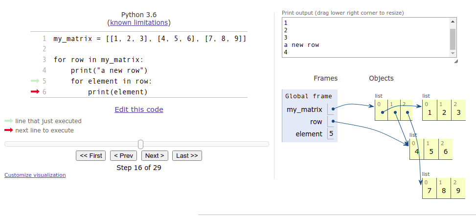
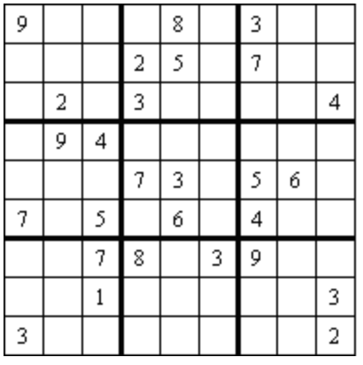

In the previous part we mainly handled lists with integer items, but any types of values can be stored in lists. A list of strings could look like this:
names = ["Marlyn", "Ruth", "Paul"]
print(names)
names.append("David")
print(names)
print("Number of names on the list:", len(names))
print("Names in alphabetical order:")
names.sort()
for name in names:
print(name)
Floating point numbers are also valid list items:
measurements = [-2.5, 1.1, 7.5, 14.6, 21.0, 19.2]
for measure in measurements:
print(measure)
mean = sum(measurements) / len(measurements)
print("The mean is:", mean)
We know it is possible to assign new variables within function definitions, but the function can also see variables assigned outside it, in the main function. Such variables are called global variables.
Using global variables from within functions is usually a bad idea. Among other issues, doing so may cause bugs which are difficult to trace.
Below is an example of a function which uses a global variable “by mistake”:
def print_reversed(names: list):
# using the global variable instead of the parameter by accident
i = len(name_list) - 1
while i >= 0:
print(name_list[i])
i -= 1
# here the global variable is assigned
name_list = ["Steve", "Jean", "Katherine", "Paul"]
print_reversed(name_list)
print()
print_reversed(["Huey", "Dewey", "Louie"])
Even though both function calls have the right kind of argument, the function always prints out what is stored in the global variable name_list.
To make matters even more muddled, remember that all code for testing your functions should be placed within the if __name__ == "__main__": block for the automatic tests. The previous example should be modified:
def print_reversed(names: list):
# using the global variable instead of the parameter by accident
i = len(name_list) - 1
while i>=0:
print(name_list[i])
i -= 1
# All the code for testing the function should be within this block
if __name__ == "__main__":
# here the global variable is assigned
name_list = ["Steve", "Jean", "Katherine", "Paul"]
print_reversed(name_list)
print()
print_reversed(["Huey", "Dewey", "Louie"])
Notice the global variable is assigned within the if block now.
The automatic tests in the TMC system are executed without running any of the code in the if block. So, in this latter example the function wouldn’t even theoretically work, since it refers to the variable name_list, which doesn’t exist at all when the tests are executed.
There are a couple of novel sources of bugs we should look at before jumping into the exercises in this part. Let’s have a look at a function which tells us whether an integer is found within a list. Both are defined as parameters of the function:
def number_in_list(numbers: list, number: int):
for number in numbers:
if number == number:
return True
else:
return False
This function seems to always return True. The reason is that the for loop overwrites the value stored in the parameter number. Thus the condition in the if statement is always true.
Renaming the parameter solves the problem:
def number_in_list(numbers: list, searched_number: int):
for number in numbers:
if number == searched_number:
return True
else:
return False
Now the condition in the if statement looks better. But there is a new problem, since the function still doesn’t seem to work correctly. Trying out the following manifests a bug:
found = number_in_list([1, 2, 3, 4], 3)
print(found) # prints out False
The issue here is that the function returns too early, without checking all the numbers in the list. In fact, the function takes only the first item in the list, and returns True or False depending on its value. We cannot know whether a number is not present in the list until we have checked all the items in the list. The return False command should be placed outside the for loop:
def number_in_list(numbers: list, searched_number: int):
for number in numbers:
if number == searched_number:
return True
return False
Let’s have a look at another faulty function:
def unique_numbers(numbers: list):
# a helper variable to store all the numbers we've already checked
numbers = []
for number in numbers:
# have we seen this number already?
if number in numbers:
return False
numbers.append(number)
return True
unique = unique_numbers([1, 2, 2])
print(unique) # prints out True
This function is supposed to check whether all numbers in a list are distinct from each other, but it always returns True.
Here the function again overwrites the value stored in its parameter by mistake. The function tries to use the variable numbers to store all the numbers already checked, but this overwrites the original argument list. Renaming the helper variable is an easy fix:
def unique_numbers(numbers: list):
# a helper variable to store all the numbers we've already checked
numbers_checked = []
for number in numbers:
# have we seen this number already?
if number in numbers_checked:
return False
numbers_checked.append(number)
return True
unique = unique_numbers([1, 2, 2])
print(unique) # prints out False
Problems like this, and many others, can be located and fixed with the help of the debugger or the visualisation tool. Learning to use these efficiently cannot be emphasised enough.
The items in a list can be lists themselves:
my_list = [[5, 2, 3], [4, 1], [2, 2, 5, 1]]
print(my_list)
print(my_list[1])
print(my_list[1][0])
Why would lists within lists be useful?
Remember that lists can contain items of different types. You could store information about a person in a list. For instance, you could include their name as the first item, their age as the second item, and their height in meters as the third item:
["Anne", 12, 1.45]
A database of persons could then be a list, whose items would be lists containing information about a single person:
persons = [["Betty", 10, 1.37], ["Peter", 7, 1.25], ["Emily", 32, 1.64], ["Alan", 39, 1.78]]
for person in persons:
name = person[0]
age = person[1]
height = person[2]
print(f"{name}: age {age} years, height {height} meters")
The for loop goes through the items in the outer list one by one. That is, each list containing information about a single person is, in turn, assigned to the variable person.
Lists arent always the best way to present data, such as information about a person. We will soon come across Python dictionaries, which are often better suited to such situations.
A two-dimensional array, or a matrix, is also a natural application of a list within a list.
For example, the following matrix

could be presented as a two-dimensional list in Python like so:
my_matrix = [[1, 2, 3], [3, 2, 1], [4, 5, 6]]
Since a matrix is a list containing lists, the individual elements within the matrix can be accessed using consecutive square brackets. The first index refers to the row, and the second to the column. Indexing starts from zero, so for example my_matrix[0][1] refers to the second item on the first row.
my_matrix = [[1, 2, 3], [3, 2, 1], [4, 5, 6]]
print(my_matrix[0][1])
my_matrix[1][0] = 10
print(my_matrix)
Like any other list, the rows of the matrix can be traversed wth a for loop. The following code prints out each row of the matrix on a separate line:
my_matrix = [[1, 2, 3], [4, 5, 6], [7, 8, 9]]
for row in my_matrix:
print(row)
Likewise, nested loops can be used to access the individual elements. The following code prints out each element in the matrix on a separate line with the help of two for loops:
my_matrix = [[1, 2, 3], [4, 5, 6], [7, 8, 9]]
for row in my_matrix:
print("a new row")
for element in row:
print(element)
Programs containing lists within lists can feel hard to grasp at first. The visualisation tool from Python Tutor is a great help in understanding how they work. The following is a visualisation of the example above:

The image above reveals that a 3 by 3 matrix technically consists of four lists. The first list represents the entire matrix. The three remaining lists are items in the first list, and represent the rows.
As multidimensional lists can be traversed with nested loops, it would be natural to think of the lists themselves as nested, but the image above shows us this isn’t actually so. Instead, the list representing the whole matrix “points” to each individual list representing a row in the matrix. This is called a reference, and in the following section the idea will be explored more thoroughly.
In the image above the execution has progressed to the second row of the matrix, and this list is what the variable row currently refers to. The variable element contains the element the execution is currently at. The value stored in element is the middle item in the list, i.e. 5.
Accessing a single row within a matrix is simple - just choose the desired row. The following function calculates the sum of the elements on a chosen row:
def sum_of_row(my_matrix, row_no: int):
# choose the desired row from within the matrix
row = my_matrix[row_no]
row_sum = 0
for item in row:
row_sum += item
return row_sum
m = [[4, 2, 3, 2], [9, 1, 12, 11], [7, 8, 9, 5], [2, 9, 15, 1]]
my_sum = sum_of_row(m, 1)
print(my_sum) # prints out 33 (which equals 9 + 1 + 12 + 11)
Working with columns within a matrix is slightly more complicated, as the matrix is stored by rows:
def sum_of_column(my_matrix, column_no: int):
# go through each row and select the item at the chosen position
column_sum = 0
for row in my_matrix:
column_sum += row[column_no]
return column_sum
m = [[4, 2, 3, 2], [9, 1, 12, 11], [7, 8, 9, 5], [2, 9, 15, 1]]
my_sum = sum_of_column(m, 2)
print(my_sum) # prints out 39 (which equals 3 + 12 + 9 + 15)
The column handled here consists of the elements at index 2 on each row.
The visualisation tool is definitely recommended for understanding how these functions work.
Changing the value of a single element within the matrix is simple: choose a row within the matrix, and then a column within the row:
def change_value(my_matrix, row_no: int, column_no: int, new_value: int):
# choose the desired row
row = my_matrix[row_no]
# select the correct item within the row
row[column_no] = new_value
m = [[4, 2, 3, 2], [9, 1, 12, 11], [7, 8, 9, 5], [2, 9, 15, 1]]
print(m)
change_value(m, 2, 3, 1000)
print(m)
Notice how above we used the indexes of the row and column to access a chosen element. If we want to change the contents of the matrix, we have to access the elements by their indexes. This means that we can’t use a simple for item in list loop to traverse the matrix if we want to change the contents of the matrix.
Instead, we will have to keep track of the indexes of the elements, for example with a while loop, or a for loop using the range function. The following code increases the value of each element in the matrix by one:
m = [[1,2,3], [4,5,6], [7,8,9]]
for i in range(len(m)): # using the number of rows in the matrix
for j in range(len(m[i])): # using the number of items on each row
m[i][j] += 1
print(m)
The outer loop goes through indexes from zero to the length of the matrix, that is, the number of rows in the matrix. The inner loop goes through indexes from zero to the length of each row within the matrix.
A matrix can be a very useful data structure in many different games. For example, the grid of a sudoku game in the image below

can be represented in matrix form like so:
sudoku = [
[9, 0, 0, 0, 8, 0, 3, 0, 0],
[0, 0, 0, 2, 5, 0, 7, 0, 0],
[0, 2, 0, 3, 0, 0, 0, 0, 4],
[0, 9, 4, 0, 0, 0, 0, 0, 0],
[0, 0, 0, 7, 3, 0, 5, 6, 0],
[7, 0, 5, 0, 6, 0, 4, 0, 0],
[0, 0, 7, 8, 0, 3, 9, 0, 0],
[0, 0, 1, 0, 0, 0, 0, 0, 3],
[3, 0, 0, 0, 0, 0, 0, 0, 2]
]
Here the value zero represents an empty square, as zero is not an acceptable value in a finished sudoku puzzle.
Here is a simple function for printing out the above sudoku grid:
def print_grid(sudoku):
for row in sudoku:
for square in row:
if square > 0:
print(f" {square}", end="")
else:
print(" _", end="")
print()
print_grid(sudoku)
The printout should look like this::
9 _ _ _ 8 _ 3 _ _
_ _ _ 2 5 _ 7 _ _
_ 2 _ 3 _ _ _ _ 4
_ 9 4 _ _ _ _ _ _
_ _ _ 7 3 _ 5 6 _
7 _ 5 _ 6 _ 4 _ _
_ _ 7 8 _ 3 9 _ _
_ _ 1 _ _ _ _ _ 3
3 _ _ _ _ _ _ _ 2
Any common game with a gameboard layout can be modelled in a similar fashion. Among others, chess, Minesweeper, Battleship or Mastermind are all based on a two-dimensional grid. For sudoku, it is natural to use numbers to represent the game state, but for other games, different methods may be better.
9 0 0 2 0 0 0 2 0The second function call should check the 3 by 3 block beginning with the square at row 1, column 2:
0 2 5 0 3 0 4 0 0This second block would not be checked in an actual game of sudoku, but your function should allow for it to be checked.